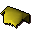

Wig

| Config name | blondwig |
| Item id | 2419 |
| Weight | 1lb |
| Members | No |
| Tradeable | No |
| Stackable | No |
| Defined in | scripts/quests/quest_prince/configs/quest_prince.obj |
Wig
A wig that has been dyed slightly blonde.
Quests
Referenced in scripts
scripts/areas/area_alkharid/scripts/osman.rs2scripts/areas/area_draynor/scripts/leela.rs2scripts/areas/area_draynor/scripts/prince_ali.rs2scripts/quests/quest_prince/scripts/prince_journal.rs2scripts/quests/quest_prince/scripts/quest_prince.rs2